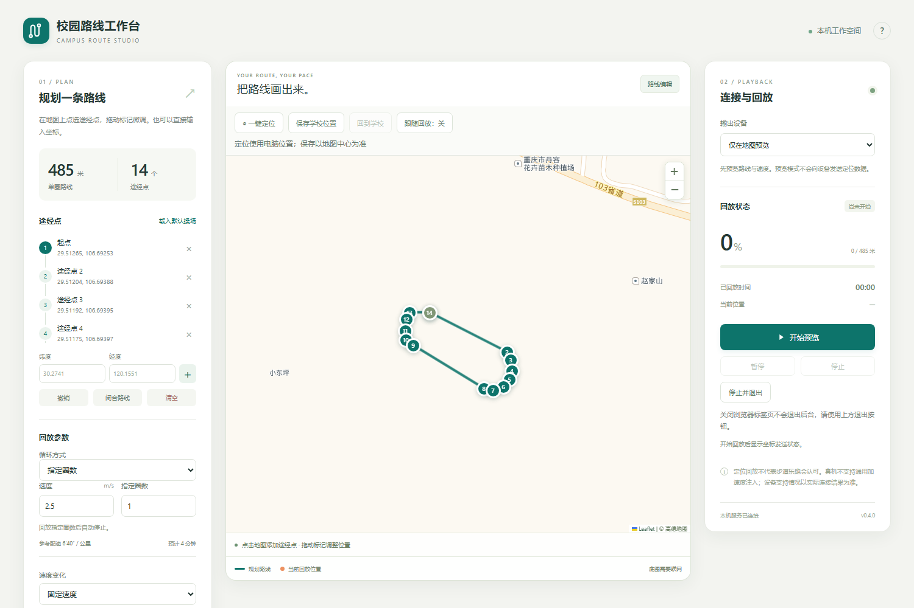
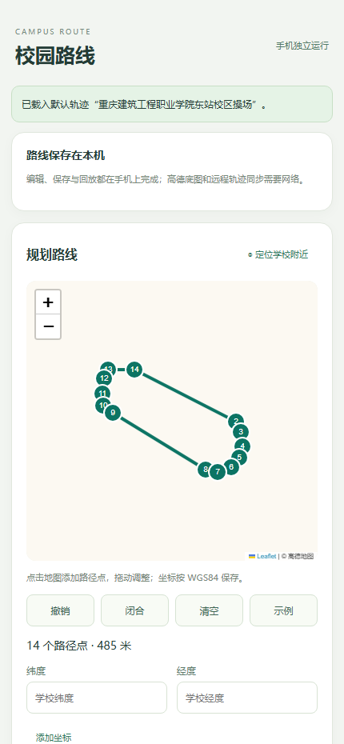

校园乐跑助手CAMPUS ROUTE STUDIO
在电脑上规划路线，
按你的速度与圈数回放定位。
用高德地图点选途经点，设置速度、逐渐加速 / 突然快慢、左右摆幅与圈数，然后回放到 Android 真机、MuMu 模拟器或 iPhone。路线以 WGS84 保存，可导入导出 GPX / GeoJSON。
这是一个下载页，不是在线版
设备回放必须在本机运行，网页做不到，所以这里只提供下载入口。原因是：
- 浏览器无法连接 iPhone。iOS 回放需要在本机通过 USB 访问 Apple 移动设备服务（usbmuxd），iOS 17 以上还要建立用户态 TCP 隧道，浏览器没有这种能力。
- 浏览器无法调用 ADB 或 MuMu。Android 与 MuMu 回放需要在本机执行
adb / MuMuManager.exe 命令，网页不能启动本机程序。
- 本机服务只接受自己的页面。桌面版后台开启了会话校验与来源校验，任何第三方网页（包括本站）发出请求都会被拒绝，这是为了防止别的网站操控你的手机定位。
所以「在线版」与桌面版功能不可能一致，本项目没有做在线版。请下载下面的桌面版使用完整功能。
Windows 桌面版
推荐 · 功能完整
解压后双击 start.cmd，浏览器会自动打开工作台。支持 Android USB、MuMu、iPhone USB 与官方模拟器回放；连接安卓真机所需的 helper 安装包已内置在压缩包里。
前往下载
Android 独立版
已知问题 · 已停发
手机端独立运行的安装包。目前存在无法定位的问题：启动辅助后目标软件定位不更新、不移动，安装后可能无法正常使用。新版本已不再附带此安装包。
去 v0.4.0 下载
源代码
GPL-3.0-or-later
Python 3.11+，无需第三方依赖即可运行桌面版；iOS 回放另需 pymobiledevice3。
查看仓库
Windows 上怎么用
- 在 Releases 下载
CampusRouteStudio-Windows.zip，解压到普通文件夹。
- 双击
start.cmd，浏览器自动打开本机工作台。
- 在地图上点击添加途经点，或用「一键定位」找到学校附近，也可以导入 GPX / GeoJSON。
- 设置速度、变速方式、左右摆幅与圈数。这些设置会自动保存在浏览器里，下次打开自动恢复，不用每次重填。
- 先选「仅在地图预览」核对路线，再选 Android / MuMu / iPhone 并开始回放。
- 结束后用「停止并退出」关闭后台服务。只关浏览器标签页不会退出程序。

Windows 桌面版

Android 独立版
连接 iPhone 需要准备什么
- 用数据线连接 iPhone，解锁后选择「信任此电脑」，并安装 Apple 设备驱动。
- 在 iPhone 上打开「开发者模式」；首次连接可能需要准备与系统版本匹配的开发者服务文件（DDI）。
- 在桌面版右侧选择「iPhone / iPad（USB）」，刷新并选中设备，然后开始回放。
- iOS 17.0–17.3.1 在 Windows 上需要以管理员身份运行
pymobiledevice3 remote tunneld；iOS 17.4 及以上由程序自动尝试建立 userspace tunnel。
iOS 接口只设置经纬度，不发送步数、运动传感器、速度或方向数据。系统版本、开发者模式与驱动都会影响可用性。
请注意
- 定位回放不代表步道乐跑等目标软件会认可记录。目标软件可能识别模拟位置或校验运动数据，本项目不保证任何结果。
- 学校要求只能在操场跑时，请按实际操场边界准确规划路线，并自行核对学校规定。
- 桌面版连接 Android 时需要把
Route Studio Helper 设为「模拟位置信息应用」，并与手机独立版区分开，两者不能同时生效。
- 使用完毕后请在设备上确认定位已恢复正常。